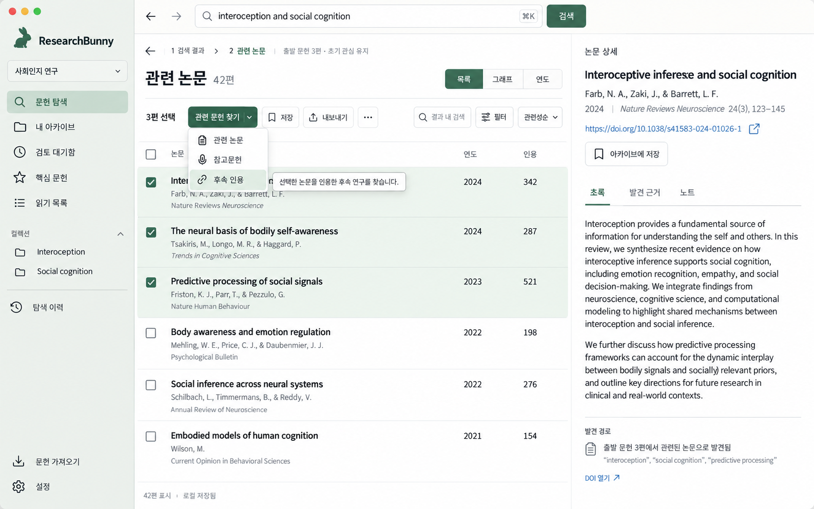
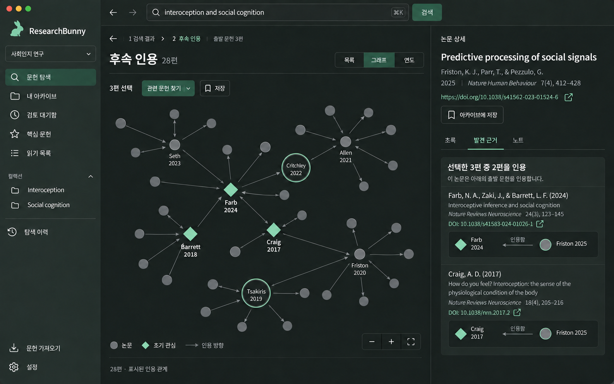
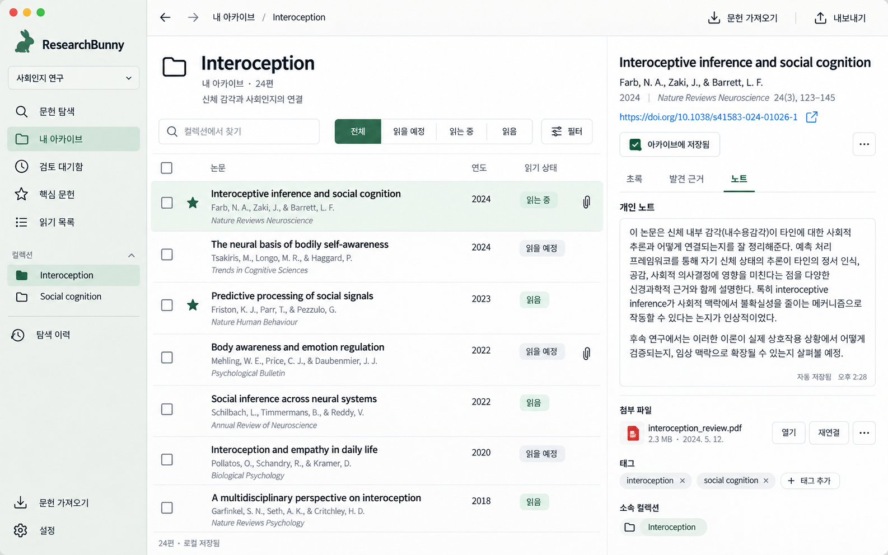
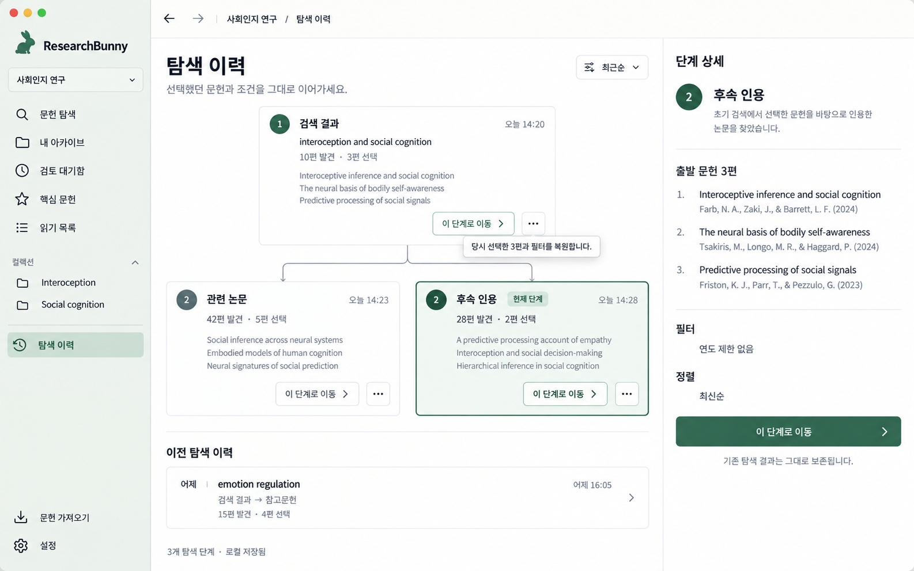
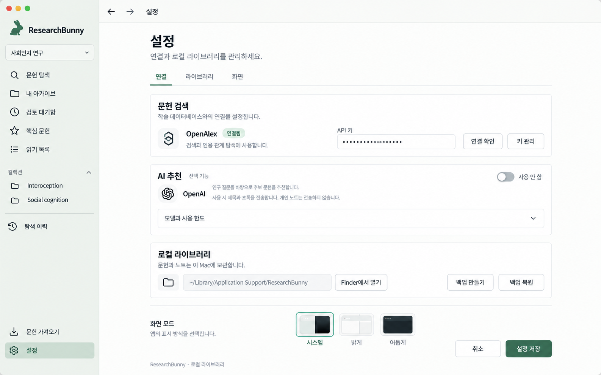

탐색의 출발점과 현재 선택을 명확히 보여주고, 자주 쓰는 조작을 정돈한 5개 화면 시안입니다.
선택 문헌의 작업을 한곳에 모으고 탐색 경로를 상단에 고정했습니다.

차콜 다크 모드에서 관계와 선택을 강조하고, 발견 근거를 옆에서 확인합니다.

목록은 읽기 상태로 정돈하고 오른쪽에서 노트·첨부를 관리합니다.

동일한 선택 문헌에서 갈라진 관련 논문·후속 인용 분기를 한눈에 보여줍니다.

검색 연결, 선택적 AI, 로컬 보관을 구분하고 고급 항목은 접어 둡니다.
